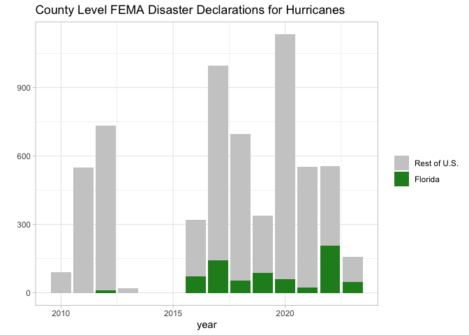

Introduction
rfema allows users to access The Federal Emergency Management Agency’s (FEMA) publicly available data through the open FEMA API. The package provides a set of functions to easily navigate and access all data sets provided by FEMA, including (but not limited to) data from the National Flood Insurance Program and FEMA’s various disaster aid programs.
FEMA data is publicly available at the open FEMA website and is available for bulk download, however, the files are sometimes very large (multiple gigabytes) and many times users do not need all records for a data series (for example: many users may only want records for a single state for several years). Using FEMA’s API is a good option to circumvent working with the bulk data files, but can be inaccessible for those without prior API experience. This package contains a set of functions that allows users to easily identify and retrieve data from FEMA’s API without needing any technical knowledge of APIs. Notably, the FEMA API does not require an API key meaning the package is extremely accessible regardless of if the user has ever interacted with an API.
The rest of this page explains the benefits of the package and demonstrates basic usage of the package. For those looking for more in depth examples of how to use the package in your workflow, consider reading the Getting Started vignette.
In accordance with the Open Fema terms and conditions: This product uses the Federal Emergency Management Agency’s Open FEMA API, but is not endorsed by FEMA. The Federal Government or FEMA cannot vouch for the data or analyses derived from these data after the data have been retrieved from the Agency’s website(s). Guidance on FEMA’s preferred citation for Open FEMA data can be found at: https://www.fema.gov/about/openfema/terms-conditions.
Why rfema?
What are the advantages of accessing the FEMA API through the rfema package as compared to accessing the API directly? In short, the rfema package handles much of the grunt work associated with constructing API queries, dealing with API limits, and applying filters or other parameters. Suppose one wants to obtain data on all of the flood insurance claims in Florida for 2020. The following code obtains that data without the use of the rfema package. As can be seen it requires quite a few lines of code, in part due to the API limiting calls to 1000 records per call which can make obtaining a full data set cumbersome.
# Code needed to obtain data on flood insurance claims in FL without the rfema package ------------------
# define the url for the appropriate api end point
base_url <- "https://www.fema.gov/api/open/v2/FimaNfipClaims"
# append the base_url to apply filters
filters <- "?$inlinecount=allpages&$filter=(state%20eq%20'FL')%20and%20(yearOfLoss%20eq%202020)"
api_query <- paste0(base_url, filters)
# run a query setting the top_n parameter to 1 to check how many records match the filters
record_check_query <- "https://www.fema.gov/api/open/v2/FimaNfipClaims?$inlinecount=allpages&$top=1&$filter=(state%20eq%20'FL')%20and%20(yearOfLoss%20eq%202020)"
# run the api call and determine the number of matching records
result <- httr::GET(record_check_query)
jsonData <- httr::content(result)
n_records <- jsonData$metadata$count
# calculate number of calls neccesary to get all records using the
# 1000 records/ call max limit defined by FEMA
iterations <- ceiling(n_records / 1000)
# initialize a skip counter which will indicate where in the full
# data set each API call needs to start from.
skip <- 0
# make however many API calls are neccesary to get the full data set
for (i in seq(from = 1, to = iterations, by = 1)) {
# As above, if you have filters, specific fields, or are sorting, add
# that to the base URL or make sure it gets concatenated here.
result <- httr::GET(paste0(api_query, "&$skip=", (i - 1) * 1000))
if (result$status_code != 200) {
status <- httr::http_status(result)
stop(status$message)
}
json_data <- httr::content(result)[[2]]
# for data returned as a list of lists, correct any discrepancies
# in the length of the lists by adding NA values to the shorter lists
# calculate longest list
max_list_length <- max(sapply(json_data, length))
# add NA values to lists shorter than the max list length
json_data <- lapply(json_data, function(x) {
c(x, rep(NA, max_list_length - length(x)))
})
if (i == 1) {
# bind the data into a single data frame
data <- data.frame(do.call(rbind, json_data))
} else {
data <- dplyr::bind_rows(
data,
data.frame(do.call(rbind, json_data))
)
}
}
# remove the html line breaks from returned data frame (if there are any)
data <- as_tibble(lapply(data, function(data) gsub("\n", "", data)))
# view the retrieved data
data## # A tibble: 9,986 × 73
## agriculture…¹ asOfD…² basem…³ polic…⁴ crsCl…⁵ dateO…⁶ eleva…⁷ eleva…⁸ eleva…⁹
## <chr> <chr> <chr> <chr> <chr> <chr> <chr> <chr> <chr>
## 1 FALSE 2021-0… 0 1 5 2020-0… FALSE NULL 1
## 2 FALSE 2023-0… 0 1 6 2020-0… FALSE 1 NULL
## 3 FALSE 2020-0… 2 1 7 2020-0… TRUE 3 -6
## 4 FALSE 2022-0… 0 1 6 2020-0… FALSE 1 NULL
## 5 FALSE 2023-0… 1 1 10 2020-0… FALSE 3 1
## 6 FALSE 2023-0… NULL 1 6 2020-0… TRUE NULL 0
## 7 FALSE 2020-0… NULL 1 6 2020-0… FALSE NULL 7
## 8 FALSE 2022-1… 0 1 7 2020-0… FALSE NULL NULL
## 9 FALSE 2022-1… 0 1 5 2020-0… FALSE 1 NULL
## 10 FALSE 2023-0… 0 1 5 2020-0… FALSE NULL 4
## # … with 9,976 more rows, 64 more variables: baseFloodElevation <chr>,
## # ratedFloodZone <chr>, houseWorship <chr>, locationOfContents <chr>,
## # lowestAdjacentGrade <chr>, lowestFloorElevation <chr>,
## # numberOfFloorsInTheInsuredBuilding <chr>, nonProfitIndicator <chr>,
## # obstructionType <chr>, occupancyType <chr>, originalConstructionDate <chr>,
## # originalNBDate <chr>, amountPaidOnBuildingClaim <chr>,
## # amountPaidOnContentsClaim <chr>, …Compare the above block of code to the following code which obtains the same data using the rfema package. The rfema package allows the same request to be made with two lines of code. Notably, the open_fema() function handles checking the number of records and implements an iterative loop to deal with the 1000 records/call limit.
# define a list of filters to apply
filterList <- list(state = "FL",yearOfLoss = "= 2020")
# Make the API call using the `open_fema` function. The function will output a
# status message to the console letting you monitor the progress of the data retrieval.
data <- open_fema(data_set = "fimaNfipClaims",ask_before_call = F, filters = filterList)
# view data
data## # A tibble: 9,986 × 73
## agriculture…¹ asOfDate basem…² polic…³ crsCl…⁴ dateOfLoss
## <chr> <dttm> <chr> <chr> <chr> <dttm>
## 1 FALSE 2021-03-30 00:00:00 0 1 5 2020-01-02 00:00:00
## 2 FALSE 2023-06-01 00:00:00 0 1 6 2020-01-03 00:00:00
## 3 FALSE 2020-07-17 00:00:00 2 1 7 2020-01-02 00:00:00
## 4 FALSE 2022-09-11 00:00:00 0 1 6 2020-01-05 00:00:00
## 5 FALSE 2023-02-14 00:00:00 1 1 10 2020-01-09 00:00:00
## 6 FALSE 2023-03-03 00:00:00 NULL 1 6 2020-01-01 00:00:00
## 7 FALSE 2020-04-20 00:00:00 NULL 1 6 2020-01-11 00:00:00
## 8 FALSE 2022-11-16 00:00:00 0 1 7 2020-01-04 00:00:00
## 9 FALSE 2022-12-02 00:00:00 0 1 5 2020-01-12 00:00:00
## 10 FALSE 2023-02-22 00:00:00 0 1 5 2020-01-21 00:00:00
## # … with 9,976 more rows, 67 more variables: elevatedBuildingIndicator <chr>,
## # elevationCertificateIndicator <chr>, elevationDifference <chr>,
## # baseFloodElevation <chr>, ratedFloodZone <chr>, houseWorship <chr>,
## # locationOfContents <chr>, lowestAdjacentGrade <chr>,
## # lowestFloorElevation <chr>, numberOfFloorsInTheInsuredBuilding <chr>,
## # nonProfitIndicator <chr>, obstructionType <chr>, occupancyType <chr>,
## # originalConstructionDate <dttm>, originalNBDate <dttm>, …The rfema package also returns data, where possible, in formats that are easier to work with. For example, all functions return data as a tibble with all date columns converted to POSIX format. This makes plotting time series easy as the API call can be piped directly into a ggplot plot. For example, the following is a plot of the number of FEMA disaster declarations in response to hurricanes since 2010, separated out by Florida versus the rest of the United States. In an application where the most up to date data is required, this block of code can be rerun to plot the most up to date data from the FEMA API.
library(ggplot2)
open_fema("DisasterDeclarationsSummaries",
filters = list(declarationDate = ">= 2010-01-01",
incidentType = "Hurricane"),
ask_before_call = F) %>%
mutate(date = lubridate::floor_date(declarationDate,"year"),count = 1,
Florida = factor(state == "FL")) %>%
select(date,count,Florida) %>%
group_by(date,Florida) %>%
summarise(count = sum(count)) %>%
ggplot(., aes(fill=Florida, y=count, x=date)) +
geom_bar(position="stack", stat="identity") +
scale_fill_manual(name = "",values = c("grey80","forestgreen"),drop = FALSE,
labels = c("Rest of U.S.","Florida")) +
labs(x = "year",y = "",
title = "County Level FEMA Disaster Declarations for Hurricanes") +
theme_light()
Installation
Right now, the best way to install and use the rfema package is by installing directly from rOpenSci using install.packages("rfema", repos = "https://ropensci.r-universe.dev"). The FEMA API does not require and API key, meaning no further setup steps need be taken to start using the package.
Usage
For those unfamiliar with the data sets available through the FEMA API, a good starting place is to visit the FEMA API documentation page. However, if you are already familiar with the data and want to quickly reference the data set names or another piece of meta data, using the fema_data_sets() function to obtain a tibble of available data sets along with associated meta data is a convenient option.
# store meta data for the available data sets as an object in the R environment
data_sets <- fema_data_sets()
# view the just retrieved data
data_sets## # A tibble: 51 × 35
## identif…¹ name title descr…² webSe…³ dataD…⁴ keyword modif…⁵ publi…⁶ conta…⁷
## <chr> <chr> <chr> <chr> <chr> <chr> <list> <chr> <chr> <chr>
## 1 openfema… Fema… FEMA… "This … https:… https:… <list> 2023-0… Federa… OpenFE…
## 2 openfema… Ipaw… IPAW… "The I… https:… https:… <list> 2020-0… Federa… OpenFE…
## 3 openfema… Regi… Regi… "This … https:… https:… <list> 2023-0… Federa… OpenFE…
## 4 openfema… Regi… Regi… "This … https:… https:… <list> 2023-1… Federa… OpenFE…
## 5 openfema… Fema… FEMA… "This … https:… https:… <list> 2023-0… Federa… OpenFE…
## 6 openfema… Haza… Haza… "The d… https:… https:… <list> 2023-1… Federa… OpenFE…
## 7 openfema… Hous… Hous… "This … https:… https:… <list> 2023-0… Federa… OpenFE…
## 8 openfema… Hous… Hous… "The d… https:… https:… <list> 2023-0… Federa… OpenFE…
## 9 openfema… Indi… Indi… "This … https:… https:… <list> 2020-0… Federa… OpenFE…
## 10 openfema… Miss… Miss… "1.1 W… https:… https:… <list> 2023-0… Federa… OpenFE…
## # … with 41 more rows, 25 more variables: mbox <chr>, accessLevel <chr>,
## # landingPage <list>, temporal <list>, api <lgl>, version <int>,
## # bureauCode <chr>, programCode <chr>, license <list>, theme <list>,
## # dataQuality <chr>, accrualPeriodicity <list>, language <chr>,
## # references <list>, issued <list>, recordCount <list>, depDate <list>,
## # depApiMessage <list>, depWebMessage <list>, depNewURL <list>, hash <chr>,
## # lastRefresh <chr>, id <chr>, lastDataSetRefresh <list>, …Once you have the name of the data set you want, simply pass it as an argument to the open_fema() function which will return the data set as a tibble. By default, open_fema() will warn you if the number of records is greater than 1000 and present an estimated time required to complete the records request. As the user, you will the be asked to confirm that you want to retrieve all of the available records (for many data sets the total records is quite large). To turn off this feature, set the parameter ask_before_call equal to FALSE. To limit the number of records returned, specify the top_n argument. This is useful for exploring a data set without retrieving all records.
# obtain the first 10 records from the fimaNfipClaims data set.
# Note: the data_set argument is not case sensative
retrieved_data <- open_fema(data_set = "fimanfipclaims", top_n = 10)
# view the data
retrieved_data## # A tibble: 10 × 73
## agriculture…¹ asOfDate basem…² polic…³ crsCl…⁴ dateOfLoss
## <chr> <dttm> <chr> <chr> <chr> <dttm>
## 1 FALSE 2020-01-22 00:00:00 NULL 1 8 1998-02-07 00:00:00
## 2 FALSE 2020-01-22 00:00:00 NULL 1 8 2005-08-29 00:00:00
## 3 FALSE 2020-01-22 00:00:00 NULL 1 9 1998-09-28 00:00:00
## 4 FALSE 2019-09-19 00:00:00 1 1 9 1994-10-07 00:00:00
## 5 FALSE 2019-09-19 00:00:00 NULL 1 8 1996-03-11 00:00:00
## 6 FALSE 2020-01-22 00:00:00 NULL 1 NULL 1998-02-03 00:00:00
## 7 FALSE 2020-01-22 00:00:00 NULL 1 5 2017-08-27 00:00:00
## 8 FALSE 2019-10-19 00:00:00 NULL 1 NULL 1992-09-11 00:00:00
## 9 FALSE 2019-10-19 00:00:00 NULL 1 8 1998-09-28 00:00:00
## 10 FALSE 2019-09-19 00:00:00 NULL 1 8 1995-03-11 00:00:00
## # … with 67 more variables: elevatedBuildingIndicator <chr>,
## # elevationCertificateIndicator <chr>, elevationDifference <chr>,
## # baseFloodElevation <chr>, ratedFloodZone <chr>, houseWorship <chr>,
## # locationOfContents <chr>, lowestAdjacentGrade <chr>,
## # lowestFloorElevation <chr>, numberOfFloorsInTheInsuredBuilding <chr>,
## # nonProfitIndicator <chr>, obstructionType <chr>, occupancyType <chr>,
## # originalConstructionDate <dttm>, originalNBDate <dttm>, …There are a variety of other ways to more precisely target the data you want to retrieve by specifying how many records you want returned, specifying which columns in a data set to return, and applying filters to any of the columns in a data set. For more information and examples of use cases, see the Getting Started vignette.
Please note that rfema is released with a Contributor Code of Conduct. By contributing to the package you agree to abide by its terms.